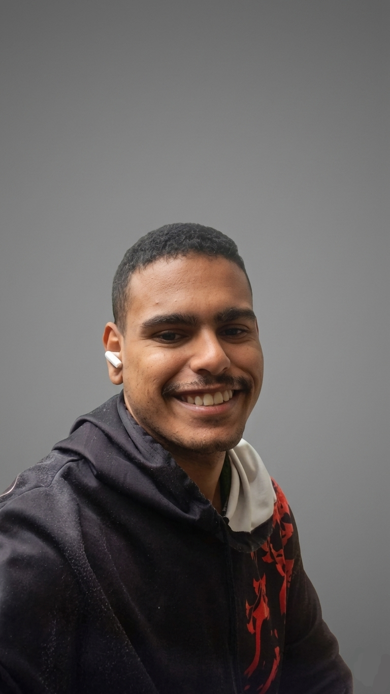

Sou um desenvolvedor movido pelo desafio de transformar ideias em produtos reais e eficientes. Minha base em programação é extremamente sólida, o que me dá a segurança de aprender e dominar qualquer tecnologia em tempo recorde. Prova disso é a versatilidade com que transito entre o desenvolvimento web (construindo plataformas em Django, JS, HTML e CSS), o ambiente mobile (criando sistemas de autenticação em Java/Kotlin integrados ao Firebase) e o desenvolvimento de jogos (programando lógicas complexas e inteligência artificial na Godot Engine com GDScript). Buscando ir além das linhas de código, estou me capacitando em Gerenciamento de Projetos para trazer organização, metodologias ágeis e planejamento estratégico para o dia a dia do desenvolvimento, tendo como próximo foco o ecossistema AWS. Adicionalmente, trago uma bagagem prática valiosa em infraestrutura de TI, cobrindo desde a manutenção preventiva de computadores e celulares até o diagnóstico de redes locais (protocolos TCP/IP) e automação via terminal (PowerShell/CMD). Procuro um ambiente dinâmico para crescer, evoluir minhas ambições e gerar impacto positivo.
• Python
• JavaScript
• HTML5 / CSS3
• GDScript
• Java
• Kotlin
• PHP
• SQL / NoSQL
• Assembly
• C++
• Django Framework
• Android Studio
• Firebase API
• Godot Engine
• Unreal Engine 5
• Unity
• WordPress
• VS Code
• PowerShell / CMD
• Manutenção de Computadores e Celulares
• Infraestrutura de Rede Local e Configuração TCP/IP
• Excel
• Photoshop
• Illustrator
• Canva
Desenvolvimento de Jogos e Inteligência Artificial
Projeto Independente (The Samurai)
janeiro de 2026 - Presente
Idealização e desenvolvimento completo de um jogo focado em narrativa na Godot Engine utilizando GDScript. Criação e implementação de sistemas complexos de IA baseados em árvores de comportamento (Behavior Trees), mapeamento personalizado de inputs, programação de física e lógica para múltiplas fases de combate.
Ferramenta de Conversão Web (PNG para PDF)
Projeto Independente
maio de 2026 - junho de 2026
Desenvolvimento de uma aplicação utilitária integrada ao portfólio para conversão de arquivos de imagem no formato PNG para documentos PDF em tempo real. Implementação lógica em JavaScript vanilla utilizando a biblioteca jsPDF, com cálculo matemático automatizado para manter a proporção da imagem (aspect ratio) e ajuste dinâmico às margens padrão de uma folha A4.
Desenvolvimento de Aplicativo Mobile
Projeto Independente
março de 2026 - abril de 2026
Criação e arquitetura de um aplicativo nativo utilizando Android Studio com as linguagens Java e Kotlin. Implementação prática de infraestrutura back-end como serviço integrando a API do Firebase para gerenciamento e persistência de dados em tempo real.
Desenvolvedor Web Back-End e Front-End
Freelancer e Autônomo - BH
dezembro de 2024 - Presente
Desenvolvimento de aplicações web completas, incluindo a criação de um sistema robusto utilizando o framework Django (Python) com arquitetura integrada e banco de dados, atualmente ativo e disponível para visualização.
Infraestrutura de TI e Hardware Avançado
Projetos Independentes e Suporte Técnico - BH
outubro de 2021 - Presente
Planejamento técnico, análise de viabilidade e montagem completa de setups de alto desempenho. Responsável pelo cálculo de dimensionamento energético, compatibilidade de componentes, manutenção corretiva e preventiva de computadores e smartphones, além de procedimentos críticos como atualizações de BIOS, gerenciamento de drivers de vídeo dedicados e configurações avançadas de redes locais com roteamento e mudanças de rotas TCP/IP.